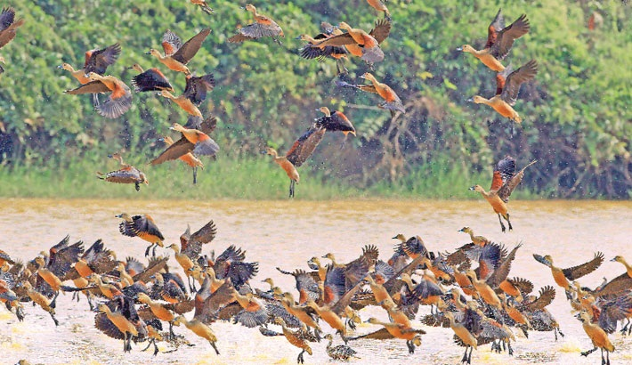

Bangladesh is a country that most people skip on their Asian backpacking trip, and its a real shame. Sandwiched between 2 backpacking hotspots India and Thailand. I am surprised that more people do not take the plunge and visit a country where the warmth of people can not fail to impress you.
1. Major Attraction  2. Fair-Festivals A. Traditional B. Religious C. National Holidays 3. Bird-Watching 4. Trip-Down-Memory-Lane 5. Land of Proud 7. Carnival-of-Culture A. Art-Culture B. Performing Arts 6. Bangladesh National Zoo